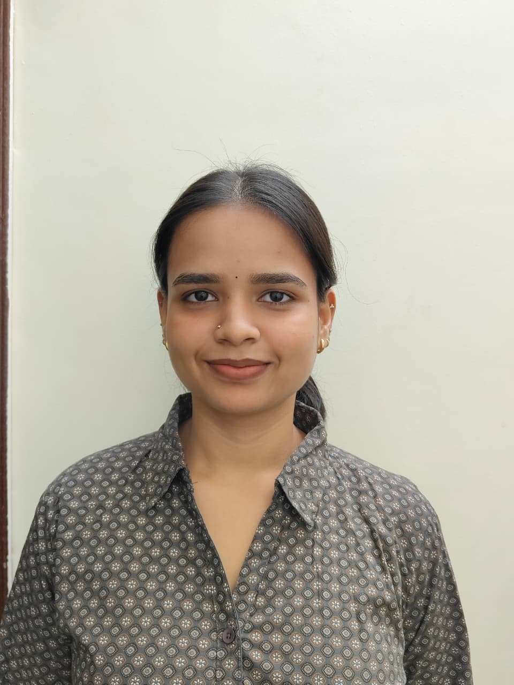

AI & Data Science Engineer
Final year B.E. student at Stanley College of Engineering, Hyderabad. Building graph neural networks, RAG pipelines, and SDN security systems that actually work in the real world.
Stanley College of Engineering and Technology for Women
Sri Chaitanya Junior College
Sri Sai Krishna Talent School
Deccan AI
IIT Hyderabad
InternPe
Low-Rate Flow Table Overflow Attack Detection in SDN
Built an end-to-end SDN emulation testbed using Mininet, Ryu Controller, and Open vSwitch. Processed 1.17M+ packet records across six LFTO attack configurations. Designed a 15-dimensional node feature vector with 6 novel LFTO-specific features including Burst Score, Protocol Entropy, and IAT Skewness.
RAG-Based Question Answering System
Built a RAG-based QA bot using LangChain, IBM Watsonx LLMs, and ChromaDB to retrieve contextually accurate answers from PDF documents. Developed a Gradio interface achieving 97% accuracy.
ACM-W Hackathon — Web-Based System
Developed a web-based career recommendation system suggesting career paths based on user interests and skills. Built using HTML, CSS, and JavaScript.
GDSC Hackathon — Metastatic Cancer Classification
CNN model with transfer learning to classify metastatic cancer in pathology images using the PCAM dataset. Achieved 90% accuracy using TensorFlow, OpenCV.
I'm open to research collaborations, internship opportunities, and interesting conversations about AI, graph networks, or SDN security.